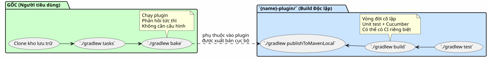
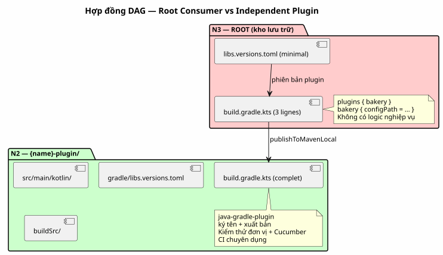

Kiến trúc « Plugin độc lập + Root tiêu thụ »: Tại sao các bản build Gradle của tôi bị nhân đôi
Đăng ngày 14 May 2026
- Vấn đề: Ba Kiến trúc Đã Khiến Tôi Lãng phí Thời gian
- Giải pháp: Hai Build Độc lập, Một Root Consumer
- Tại sao Kiến trúc này lại chinh phục tôi
- Cấu trúc của Thư mục con `{name}-plugin/
- Những Điều Không Nên Làm
- So sánh: Ba Kiến trúc Đối mặt với Dogfooding
- Hợp đồng DAG: Một Build Racin Không Bao Giờ Được Thực Hiện Từ Một Thư Mục Con
- Kết luận: Sự trùng lặp giả tạo giúp tiết kiệm thời gian
- Tài liệu tham khảo
Bạn clone một repository plugin Gradle. Bạn mở một terminal. Bạn nhập gì sau đó thì sao?./gradlew tasks, tất nhiên rồi. Nhưng trong thư mục nào? Thư mục gốc? Hay trong submodule? Có cần phải đọc tệp README trước để biết cách build không? Nếu bạn còn phân vân dù chỉ là chỉ một giây thôi, kiến trúc của dự án đã bị hỏng.
Đây là cách tôi đã giải quyết vấn đề này một lần và mãi mãi — và lý do tại sao điều này pattern hiện nay là chữ ký của tất cả các plugin Gradle của tôi trong`foundry/public/`Vui lòng cung cấp văn bản cần dịch.
Vấn đề: Ba Kiến trúc Đã Khiến Tôi Lãng phí Thời gian
Trước khi hội tụ về pattern hiện tại, tôi đã thử nghiệm giữa ba cách tiếp cận phổ biến để tổ chức một plugin Gradle. Mỗi phương pháp đều có một nhược điểm chí tử.
Tùy chọn 1 : Plugin Cô lập (không dogfooding)
Dự án chỉ chứa plugin. Không có ví dụ sử dụng. Không có dự án thực hiện nó. Để kiểm tra, cần tạo một dự án bên ngoài, y tham chiếu plugin thông qua`mavenLocal`hoặc một composite build, và chỉ là là kiểm tra xem nó có hoạt động không.
$ git clone mon-plugin
$ cd mon-plugin
$ ./gradlew build # le plugin compile
$ # ... et maintenant ? comment je l'essaie ?|
Một plugin Gradle không có ví dụ sử dụng thì giống như một thư viện không có các bài kiểm tra tích hợp. Bạn không bao giờ biết liệu thay đổi cuối cùng có phá hỏng trải nghiệm người dùng. |
Tùy chọn 2: Monorepo Cổ điển (include(":plugin"))
Gradle`init`tạo ra`settings.gradle.kts`với`include("plugin")`Vui lòng cung cấp văn bản cần dịch. Root và module con chia sẻ cùng một daemon, cùng các cấu hình, cùng một danh mục. Tiện lợi, nhưng bị ràng buộc.
.
├── settings.gradle.kts → include("plugin")
├── build.gradle.kts → plugins { id("mon-plugin") }
├── plugin/
│ └── build.gradle.kts → java-gradle-plugin
└── gradle/
└── libs.versions.tomlĐiều gây vướng mắc:
-
Rootphảicó cùng phiên bản Gradle với module con.
-
`libs.versions.toml`được chia sẻ — version catalogs chung, dependencies
rò rỉ từ mô-đun này sang mô-đun khác.
-
Không thể build plugin độc lập với root.
-
CI phải build cả hai module, ngay cả khi chỉ có plugin thay đổi.
Tùy chọn 3: Composite Build (includeBuild())
Chúng ta tách hai thành phần này thành các build Gradle riêng biệt và kết nối chúng thông qua `includeBuild("mon-plugin")`trong`settings.gradle.kts`Vui lòng cung cấp văn bản tiếng Pháp cần dịch.
Như vậy là đã tốt hơn. Bản build của plugin đã được cô lập. Nhưng người tiêu thụ phải tham chiếu rõ ràng đến build bên ngoài — và đầu ra của `./gradlew tasks`tại gốc phụ thuộc vào việc cấu hình đúng của composite. Việc nhân bản không phải là zero-config: cần biết rằng cái plugin nằm trong một thư mục riêng, root tham chiếu đến nó, v.v.
.
├── settings.gradle.kts → includeBuild("plugin-build/")
├── build.gradle.kts → plugins { id("mon-plugin") }
└── plugin-build/
├── settings.gradle.kts
└── build.gradle.ktsTôi đã tìm kiếm điều gì đó tốt hơn. Tốt hơn nhiều.
Giải pháp: Hai Build Độc lập, Một Root Consumer
Đây là pattern mà tôi cuối cùng đã áp dụng:
.
├── settings.gradle.kts ← racine consommateur
├── build.gradle.kts ← 3 lignes : apply plugin + dogfood
├── gradle/
│ └── libs.versions.toml ← catalogue du consommateur
├── {name}-plugin/ ← BUILD INDÉPENDANT
│ ├── gradlew ← son propre wrapper
│ ├── settings.gradle.kts ← rootProject.name = "{name}-plugin"
│ ├── build.gradle.kts ← java-gradle-plugin, signing, publish
│ ├── gradle/
│ │ ├── libs.versions.toml ← catalogue du plugin
│ │ └── wrapper/
│ ├── src/ ← sources du plugin
│ ├── .agents/ ← gouvernance agent
│ └── *.adoc ← AGENT, PROMPT_REPRISE, snapshot, etc.
└── site.yml / slides-context.yml / ... ← configs dogfood|
Khóa:`{name}-plugin/`là một dự án Gradle hoàn chỉnh và độc lập. Nó có wrapper riêng, settings riêng, danh mục riêng của phiên bản. Nó được clone, build, test và publish mà không cần quyền root biết về sự tồn tại của nó. |
Còn root thì chỉ làm một việc duy nhất: áp dụng plugin.
plugins {
alias(libs.plugins.bakery)
}
repositories {
mavenLocal()
mavenCentral()
}
bakery { configPath = file("site.yml").absolutePath }Ba dòng trong trường hợp của`bakery-gradle`. Không gì thêm. Không`include(), không`includeBuild(), không có dự án con nào. Một build Gradle điển hình áp dụng một plugin giống như bất kỳ người tiêu dùng nào sẽ làm điều đó.
Luồng Công việc

Quy trình làm việc Cụ thể
# 1. Builder le plugin
$ cd codebase-plugin
$ ./gradlew publishToMavenLocal
# 2. L'exercer depuis la racine
$ cd ..
$ ./gradlew indexCodebase queryCodebase snapshot
# La boucle est fermée. Le plugin est testé dans des conditions
# réelles de consommation, par le projet même qui l'héberge.Tại sao Kiến trúc này lại chinh phục tôi
Ba lợi ích mà khi kết hợp lại sẽ xứng đáng với chi phí của việc « duplication »:
1. Dogfooding Natif, Phản hồi Tức thì
Cách tốt nhất để kiểm tra một plugin Gradle là sử dụng nó. Không phải một unit test được mock. Không phải một`GradleRunner`với một dự án kiểm tra. Một bản build thực sự áp dụng plugin lên các tệp tin thực tế.
$ git clone bakery-gradle
$ cd bakery-gradle
$ ./gradlew bake # ← le plugin est exercé immédiatementNếu plugin bị hỏng, bản build gốc sẽ thông báo. Không cần phải đi tìm một dự án thử nghiệm bên ngoài. Dogfooding là điều đầu tiên nhiệm vụ mà một người đóng góp mới khởi chạy. Đó là bài smoke test cuối cùng.
|
Quy tắc rất đơn giản: nếu gốc biên dịch và`./gradlew tasks` hiển thị các tác vụ plugin của bạn, plugin đang hoạt động bình thường. Không có gì bất ngờ trên môi trường production. |
2. Nhân bản Zero-Config
Un `git clone && ./gradlew tasks`và người mới đến nhìn thấy tất cả hoạt động mà không cần cấu hình gì cả. Le`build.gradle.kts`gốc là tài liệu hướng dẫn sử dụng thực tế của plugin. Le`site.yml`bên cạnh hiển thị cấu hình mong đợi.
Hãy so sánh với phương án thay thế: một README gồm ba đoạn văn mà giải thích cách build plugin VÀ cách build dự án kiểm thử. Một người đóng góp mới đọc lướt qua README, nhầm lẫn, mở ra một lối thoát — trong khi thông tin có thể có thể thực thi.
|
Tài liệu mạnh mẽ nhất không phải là tài liệu mà người ta đọc. Đó là người mà tathực thi. Bản build gốc là tài liệu hướng dẫn tệp thực thi của plugin. |
3. Build Cô lập, CI Độc lập
Plugin có wrapper Gradle riêng, chu kỳ sống riêng, các bài kiểm tra của riêng mình. Bạn có thể:
-
Nâng cấp Gradle trong plugin mà không tác động đến root
-
Thêm một dependency vào plugin mà không làm cho nó bị rò rỉ ra root
-
Làm hỏng plugin mà không ảnh hưởng đến build gốc (miễn là bạn không
đừng xuất bản phiên bản bị lỗi)
-
Có một CI để build/test plugin, và một cái khác để thực thi cái
root — độc lập
.github/workflows/
├── test-plugin.yml → codebase-plugin/.gradlew build
├── test-root.yml → .gradlew tasks (vérifie que le plugin est consommable)
└── publish.yml → codebase-plugin/.gradlew publishCấu trúc của Thư mục con `{name}-plugin/
Hãy cùng xem kỹ hơn những gì có trong thư mục của plugin:
codebase-plugin/
├── gradlew ← wrapper indépendant
├── settings.gradle.kts ← @Suppress("UnstableApiUsage")
│ + foobar-resolver-convention
├── build.gradle.kts ← java-gradle-plugin + signing + publish
├── gradle/
│ ├── libs.versions.toml ← catalogue complet (langchain4j, pgvector...)
│ └── wrapper/
├── buildSrc/ ← classes utilitaires buildSrc
│ ├── build.gradle.kts
│ └── src/main/kotlin/
│ ├── codebase/ ← CodebaseYmlAnonymizer, CodebaseConfiguration
│ ├── benchmark/ ← BenchmarkConfig, BenchmarkProtocol
│ ├── readme/ ← ReadmeYmlAnonymizer
│ ├── site/ ← SiteYmlAnonymizer
│ ├── slider/ ← SliderYmlAnonymizer
│ └── snapshot/ ← SnapshotManager
├── src/
│ ├── main/kotlin/codebase/
│ │ ├── CodebasePlugin.kt ← class Plugin<Project>
│ │ ├── rag/ ← pgvector, embedding, anonymization...
│ │ ├── benchmark/ ← BenchmarkRunner, export, comparison...
│ │ └── walker/ ← WorkspaceWalker
│ └── test/
│ ├── kotlin/codebase/scenarios/ ← steps Cucumber
│ ├── features/ ← .feature files
│ └── resources/datasets/ ← fixtures .adoc, .yml, .json
├── .agents/ ← gouvernance agent (INDEX, SESSIONS, etc.)
├── AGENT.adoc ← règles agent
├── PROMPT_REPRISE.adoc ← mission session
├── BACKLOG.adoc ← backlog produit
├── snapshot.adoc ← snapshot auto-généré du projet
└── embeds.yml ← config RAG embedsMọi thứ đều ở đây. Không có sự phân tán giữa thư mục gốc và thư mục con. Nhà phát triển làm việc trên plugin không bao giờ cần phải thoát`codebase-plugin/`. Nhà phát triển sử dụng plugin chỉ nhìn vào phần gốc — và cái`build.gradle.kts`gồm 3 dòng nói cho anh ấy biết tất cả những gì anh ấy cần biết.
Danh mục Phiên bản: Hai Tệp riêng biệt
|
|
|
Số lượng phụ thuộc |
2-3 (plugin + readme nếu có) |
30+ (langchain4j, pgvector, cucumber…) |
Vai trò |
Tiêu thụ plugin |
Build plugin |
Ai đọc nó |
Người dùng plugin |
Nhà phát triển plugin |
Root có một danh mục được tối giản một cách có chủ đích. Plugin có một danh mục hoàn tất. Không thể có sự nhầm lẫn: mỗi build có scope riêng của nó phụ thuộc.
|
Nếu bạn đã từng dành cả giờ đồng hồ để gỡ lỗi một xung đột phụ thuộc giữa plugin của bạn và dự án thử nghiệm, bạn hiểu được giá trị của sự phân tách này. Các danh mục độc lập loại bỏ vấn đề này theo cấu tạo. |
Những Điều Không Nên Làm
Pattern này không phải là phép màu. Nó áp đặt một ràng buộc mà tôi sẵn lòng bắt tôi chịu:
Root không build được plugin. Bạn cần`publishToMavenLocal` ou triển khai trên một repository trước khi root có thể tiêu thụ nó.
Đây là một chi phí nhỏ, và đó là một ràng buộc đúng. Root sử dụng plugin như một client bên ngoài — thông qua Maven. Chính xác giống như một dự án bên thứ ba sẽ làm. Nếu plugin không thể xuất bản, root cho bạn biết điều đó ngay lập tức.
# La seule "friction" du pattern
$ cd codebase-plugin && ./gradlew publishToMavenLocal && cd ..
$ ./gradlew tasks --group=codebaseSo sánh: Ba Kiến trúc Đối mặt với Dogfooding
Plugin bị cô lập |
Monorepo`include()` |
Composite`includeBuild()` |
Root + plugin độc lập |
|
`git clone && gradlew tasks`cho các nhiệm vụ của plugin |
❌ |
✅ |
(No text provided to translate) |
✅ |
Build plugin độc lập với root |
✅ |
❌ |
✅ |
✅ |
Danh mục phiên bản riêng biệt |
✅ |
❌ |
No source text was provided for translation. Please send the French text you’d like translated into Vietnamese. |
Vui lòng cung cấp văn bản tiếng Pháp cần dịch. |
Không có`include()` ni |
✅ |
❌ |
❌ |
✅ |
Dogfood native không cần cấu hình |
❌ |
✅ |
⚠️ Vui lòng cung cấp văn bản tiếng Pháp cần dịch. |
✅ |
plugin CI độc lập |
Vui lòng cung cấp văn bản tiếng Pháp bạn muốn dịch sang tiếng Việt. Hiện tại tôi chưa thấy nội dung nguồn nào ngoài hướng dẫn và ký tự ✅. |
❌ |
✅ |
✅ |
root là một ví dụ về mức tiêu thụ thực tế |
❌ |
⚠️ |
✅ |
✅ |
Cột bên phải đáp ứng mọi yêu cầu. Đó là lý do tại sao tôi không sẽ không quay trở lại trước đó nữa.
Hợp đồng DAG: Một Build Racin Không Bao Giờ Được Thực Hiện Từ Một Thư Mục Con
Kiến trúc này tích hợp một cách tự nhiên vào DAG `N0→N3 từ workspace của tôi. Pattern là: plugin N2 là hub khỏi các phụ thuộc của chính nó, gốc N3 là một terminal mà áp dụng các hubs.

Le codebase-gradle/build.gradle.kts`có 6 dòng. Không có`src/, không có`buildSrc/, không có`gradle/rag-bench.gradle.kts. Chỉ `plugins { alias(libs.plugins.codebase) }`và các repositories. Tất cả sự phức tạp nằm ở`codebase-plugin/`Vui lòng cung cấp văn bản cần dịch.
Kết luận: Sự trùng lặp giả tạo giúp tiết kiệm thời gian
Khi tôi cho ai đó xem cấu trúc này, phản ứng đầu tiên thường là: « Nhưng bạn có hai`gradlew`, hai`settings.gradle.kts`, hai`libs.versions.toml`— đó là sự trùng lặp!
Vừa có. Vừa không.
Duplication » là việc sao chép cùng một thông tin tại hai vị trí. Ở đây, có hai tệp riêng biệt phục vụ cho hai mục đích sử dụng riêng biệt: danh mục của plugin (hơn 30 phụ thuộc cho builder) và danh mục từ gốc (2-3 phụ thuộc để tiêu thụ). Wrapper của plugin (phiên bản khóa để phát triển) và wrapper của gốc (phiên bản có thể khác, dành cho bài tập plugin).
Đây không phải là sự trùng lặp. Đây là sự chia tách các trách nhiệm áp dụng cho hệ thống build. Mỗi build làm một việc, và chỉ một việc duy nhất. Root tiêu thụ. Plugin được build.
Chi phí? Một đơn hàng`publishToMavenLocal`giữa quá trình build của plugin và bản build của root. Lợi ích? Một sự rõ ràng về kiến trúc mà loại bỏ hàng giờ gỡ lỗi ở hạ nguồn.
Kể từ khi tôi triển khai pattern này trên`bakery-gradle`, plantuml-gradle, codebase-gradle, và các plugin khác của`foundry/public/, tôi không có không bao giờ còn ngập ngừng khi mở một terminal trong một trong những kho lưu trữ của tôi. Le phản xạ đầu tiên —./gradlew tasks`— vẫn luôn hoạt động, luôn luôn mang lại những tác vụ đúng, và cho tôi biết ngay lập tức liệu mọi thứ có ổn định hay không.
Đó chính là kiến trúc đúng đắn. Nó không được đọc trong một tệp README. Nó được thử nghiệm trong một terminal, trong chưa đầy mười giây.